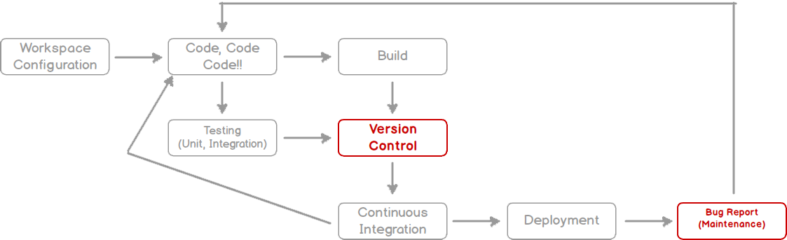

<!DOCTYPE html><html><head><meta charset="utf-8"><meta name="viewport" content="width=device-width, initial-scale=1, maximum-scale=1"><title>TKPPL | Step Untuk Melakukan Inner Peace</title><link rel="stylesheet" type="text/css" href="bower_components/prism/themes/prism.css"><link rel="stylesheet" type="text/css" href="bower_components/todc-bootstrap-main/dist/css/bootstrap.min.css"><link rel="stylesheet" type="text/css" href="styles/main-presentation.css"></head><body></body></html><nav role="navigation" class="navbar navbar-default"><div class="container"><div class="navbar-header"><button type="button" data-toggle="collapse" data-target="presentation-chooser" class="navbar-toggle"><span class="sr-only"></span><span class="icon-bar"></span><span class="icon-bar"></span><span class="icon-bar"></span></button><a href="index.html" class="navbar-brand">Teknologi Kolaborasi</a></div><div id="presentation-chooser" class="collapse navbar-collapse"><ul class="nav navbar-nav"><li class="dropdown"><a data-toggle="dropdown" href="#" class="dropdown-toggle">Pilih Presentasi <b class="caret"></b></a><ul class="dropdown-menu"><li><a href="1-Introduction.html">Definition of Inner Peace</a></li><li><a href="2-Step.html">Step-Step Untuk Melakukan Inner Peace</a></li><li><a href="3-Berkaitan.html">Hal yang berkaitan dengan Inner Peace</a></li><li><a href="4-SCRUM.html">SCRUM</a></li></ul></li></ul></div></div></nav><article id="presentation"><section><h2>Step Untuk Melakukan Inner Peace </h2><h4>Sebelum masuk kepada cara- caranya , pertama-tama ada 3 Tolak ukur seseorang telah bisa berdamai dengan diri sendiri (Inner Peace) adalah<li>Secara pikiran dan perasaan PUAS akan masa lalu (bebas dari penyesalan, rasa bersalah, marah, dendam dan luka batin), menikmati hari ini (syukur) dan Optimis (Berharap untuk )menghadapi masa depan.</li><li>Secara perilaku, penuh dengan Cinta dan Hanif (keinginan melakukan kebaikan) kepada diri sendiri dan orang lain.</li><li>Kesadaran sehari-hari, Ridha dengan ketentuan-Nya.</li></h4></section><section><h2>Cara Untuk Mencari Inner Peace</h2><h3>Karena Kami Bukan Alihnya, Kami Memberikan Cara mudahnya saja.</h3><ul></ul></section><section><h2>Step No.1</h2><h3>Menyelesaikan Hal yang belum Terselesaikan</h3><li>menyelesaikan permasalahan anda akan benar-benar membantu jiwa anda merasa bebas. Dari oada anda mempunyai isu-isu , masalah yang belum anda selesaikan. Secara otomatis anda akan merasa berat untuk menjalani hari -hari jika masalah tersebut belum terselesaikan.</li></section><section><h2>Apa yang dibutuhkan?</h2><h3>Koordinasi</h3></section><section><h2>Pembangunan Perangkat Lunak</h2><h3>(Software Construction)</h3><blockquote>(Software) construction is mostly coding and debugging but also involves 
elements of detailed design, unit testing, integration, 
integration testing, and other activities.
<small>Steven C. McConnell</small>
</blockquote></section><section><h2>Software Construction</h2></section><section data-bespoke-hash="programming-flow"><h2>Programming Flow</h2></section><section data-bespoke-hash="programming-flow-focused"><h2>Programming Flow</h2><h3>Fokus Pembelajaran</h3></section><section><h2>Studi Kasus</h2><ul><li><a href="files/github-github-github.pdf">Proses Pengembangan Github</a></li></ul></section></article><script src="bower_components/bespoke.js/dist/bespoke.min.js"></script><script src="bower_components/bespoke-bullets/dist/bespoke-bullets.min.js"></script><script src="bower_components/bespoke-scale/dist/bespoke-scale.min.js"></script><script src="bower_components/bespoke-hash/dist/bespoke-hash.min.js"></script><script src="bower_components/bespoke-progress/dist/bespoke-progress.min.js"></script><script src="bower_components/bespoke-state/dist/bespoke-state.min.js"></script><script src="bower_components/prism/prism.js"></script><script src="bower_components/prism/components/prism-bash.min.js"></script><script src="scripts/main.js"></script><script src="bower_components/jquery/jquery.min.js"></script><script src="bower_components/todc-bootstrap-main/dist/js/bootstrap.min.js"></script>